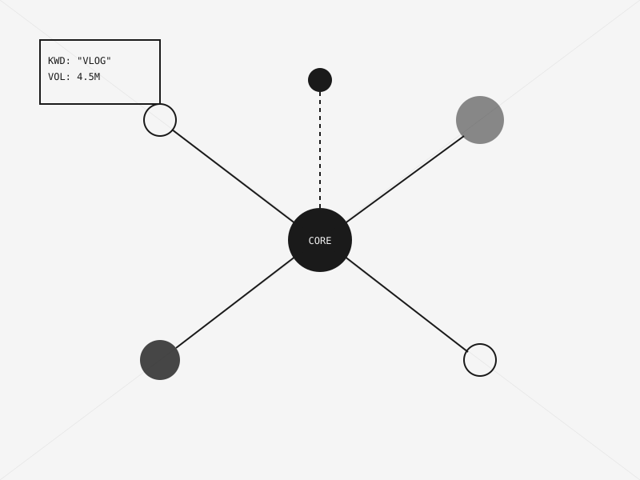

YouTube Engine_
SEO • Data Analytics • Python

Overview
A backend tool suite designed to crack the "Hinglish" algorithm. This project leverages the YouTube Data API to analyze trending keywords in the Indian demographic and suggests optimal video titles and tags.
Key Modules
- Trend Analyzer: Fetches top 50 videos in specific niches.
- Keyword Mixer: Combines Hindi and English terms for max reach.
- Thumbnail AB Testing Tracker (Manual Entry).
TECH STACK
Core Python
API YouTube V3
Data Pandas
Viz Matplotlib